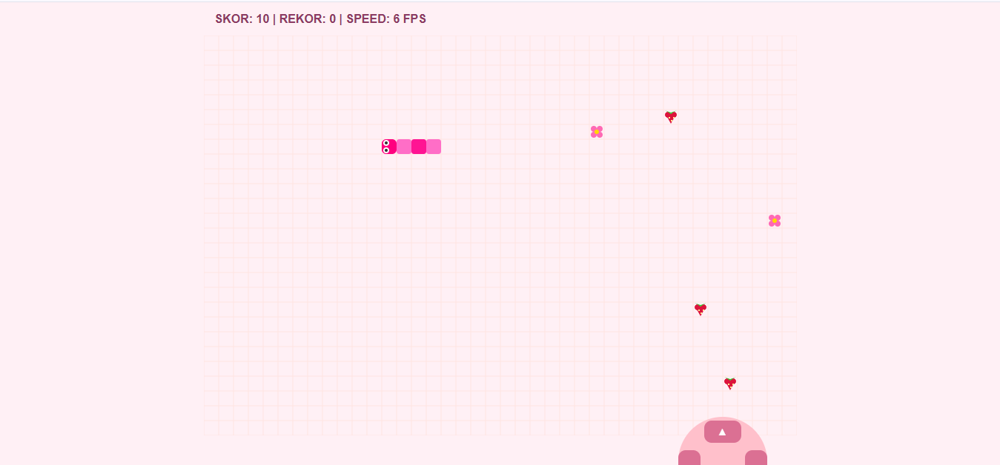
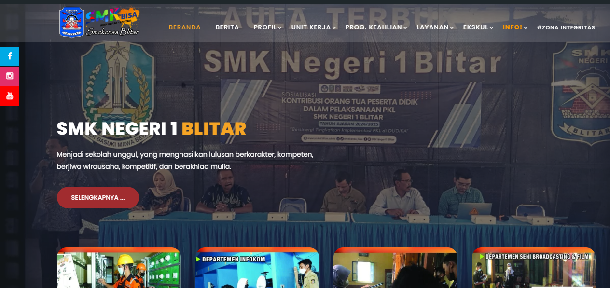
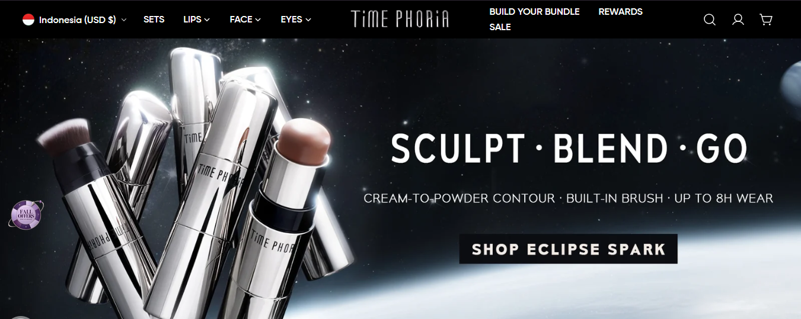

Nama Lengkap

Pengembangan Perangkat Lunak & Gim (PPLG / RPL)
Halo, Saya Siswa Oky Zhie Vara
Saya adalah siswa SMK jurusan Pengembangan Perangkat Lunak dan Gim (RPL) yang berfokus pada pengembangan web modern, pemrograman gim 2D, dan perancangan antarmuka pengguna (UI/UX). Memiliki pengalaman dalam membangun Landing Page Halaman Sekolah serta merancang website yang responsif, terstruktur, dan menarik.
Lihat Biodata LengkapData Diri Siswa
Kelas & Jurusan
XI PPLG (Rekayasa Perangkat Lunak)
Sekolah
SMK Brantas Karangkates
NISN
0123456789
Tanggal Lahir
28 Februari 2010
Tempat Tinggal
Blitar, Jawa Timur
Keahlian Utama
Pemrograman Web
Menguasai HTML, CSS (Flexbox & Grid), JavaScript, serta prinsip responsive web design untuk menciptakan tampilan web modern di berbagai perangkat.
Desain UI/UX
Mampu membuat wireframe, mockups, dan prototipe interaktif menggunakan Figma dengan memperhatikan hierarki visual, desain sistem, dan user experience.
Pemrograman Game 2D & Logika
Pengalaman merancang logika game interaktif, sistem pergerakan berbasis grid, deteksi tabrakan dinamis, manajemen skor, serta kontrol multi-platform untuk HP dan laptop.
Portofolio Proyek

Game Ular 2D (Mobile & Desktop)
Pengembangan gim ular klasik dengan deteksi tabrakan dinamis, peningkatan kecepatan otomatis, serta kontrol sentuh untuk HP dan tombol panah untuk laptop.

Landing Page Web Sekolah
Pengembangan website profil sekolah interaktif menggunakan HTML5 dan CSS3 modern, dilengkapi bilah navigasi, daftar jurusan, galeri kegiatan, serta formulir kontak responsif.

UI/UX Redesign E-Commerce
Rancangan antarmuka aplikasi belanja mobile bergaya modern yang mudah digunakan dan ramah bagi pengguna baru.